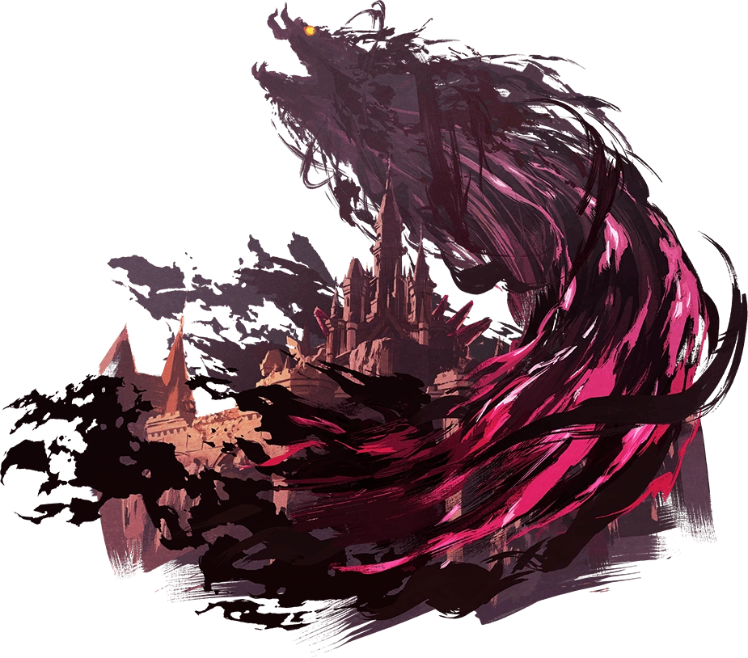

Resumen
"The Legend of Zelda: Breath of the Wild" es un juego de acción y aventuras lanzado por Nintendo en 2017 para la consola Nintendo Switch y Wii U.
La historia sigue a Link, quien despierta después de un largo sueño en el Reino de Hyrule, solo para descubrir que el malvado Calamity Ganon ha devastado el mundo y ha sumido a Hyrule en la oscuridad.
El juego se destaca por su vasto mundo abierto y su enfoque en la exploración y la supervivencia. Los jugadores pueden escalar montañas, parapentear desde lo alto, cazar, cocinar y resolver una variedad de desafíos ambientales y de rompecabezas mientras se preparan para enfrentarse a Ganon. A través de flashbacks y encuentros con personajes, se revela la historia de cómo Ganon fue sellado hace un siglo y cómo Link, Zelda y los Campeones intentaron derrotarlo. La narrativa se desarrolla a medida que Link recopila recuerdos perdidos y se prepara para el enfrentamiento final con Ganon en el Castillo de Hyrule.
"Breath of the Wild" es elogiado por su libertad de exploración, su mundo detallado y su enfoque en la resolución de problemas. Ha sido aclamado tanto por críticos como por jugadores, considerándose uno de los mejores juegos de la franquicia "The Legend of Zelda" y uno de los mejores juegos de todos los tiempos.

Historia
La historia comienza con Link despertando de un sueño profundo en la Cámara del Resurgimiento. Descubre que ha pasado un largo tiempo desde que estuvo consciente y que el Reino de Hyrule está en un estado desolador. La Princesa Zelda ha luchado valientemente contra la amenaza de Calamity Ganon, pero no ha logrado derrotarlo por completo.
Link, conocido como el Caballero de Hyrule, es guiado por la voz de la Princesa Zelda para enfrentarse a Ganon y restaurar la paz en el reino. A medida que explora el vasto mundo abierto de Hyrule, Link descubre que debe recuperar los poderes de los cuatro Campeones de Hyrule: Daruk de los Goron, Mipha de los Zora, Revali de los Rito y Urbosa de los Gerudo.
A través de flashbacks y recuerdos recuperados, se revela la historia de cómo Ganon fue liberado y cómo los Campeones y la Princesa Zelda intentaron detenerlo hace cien años. Cada Campeón pilotaba una bestia divina, una poderosa máquina diseñada para ayudar en la batalla contra Ganon.
Link visita los santuarios antiguos esparcidos por todo Hyrule para mejorar sus habilidades y obtener los poderes necesarios para enfrentarse a Ganon. Estos santuarios presentan desafíos de ingenio y habilidad que ponen a prueba al jugador en diferentes aspectos del juego.
A medida que Link reúne los poderes de los Campeones, también descubre más sobre su propia conexión con la Princesa Zelda y su papel en la lucha contra Ganon. Se entera de cómo fue elegido como el Caballero de Hyrule y de su historia pasada.
Finalmente, Link se dirige al Castillo de Hyrule para enfrentarse a Calamity Ganon. Con la ayuda de los poderes de los Campeones y el apoyo de la Princesa Zelda, logra derrotar a Ganon y restaurar la paz en Hyrule.
Personajes
Link: El protagonista principal del juego, conocido como el Caballero de Hyrule. Despierta después de un largo sueño en la Cámara del Resurgimiento y es guiado por la voz de la Princesa Zelda para derrotar a Calamity Ganon y restaurar la paz en Hyrule. Es valiente, habilidoso en el combate y cuenta con la habilidad de utilizar una variedad de armas y herramientas.

Princesa Zelda: La gobernante de Hyrule y portadora de la Trifuerza del Sabio. Ha luchado durante cien años para contener a Calamity Ganon y proteger a su reino. Aunque inicialmente se muestra frustrada por su incapacidad para sellar a Ganon, demuestra ser inteligente, valiente y determinada a lo largo del juego.
Calamity Ganon: El principal antagonista del juego, una forma corrompida y maligna del espíritu de Ganon. Ha sumido a Hyrule en la oscuridad y la desolación. Es una fuerza destructiva que amenaza con destruir todo a su paso.
Los Cuatro Campeones:
Daruk: Un Goron poderoso y valiente que pilota la bestia divina Vah Rudania.
Mipha: Una Zora gentil y compasiva que pilota la bestia divina Vah Ruta.
Revali: Un Rito orgulloso y habilidoso que pilota la bestia divina Vah Medoh.
Urbosa: Una Gerudo fuerte y noble que pilota la bestia divina Vah Naboris.
Los Campeones fueron seleccionados por sus habilidades únicas y lideraron la lucha contra Ganon hace cien años. Link debe recuperar sus poderes y obtener su ayuda para enfrentarse a Ganon una vez más.